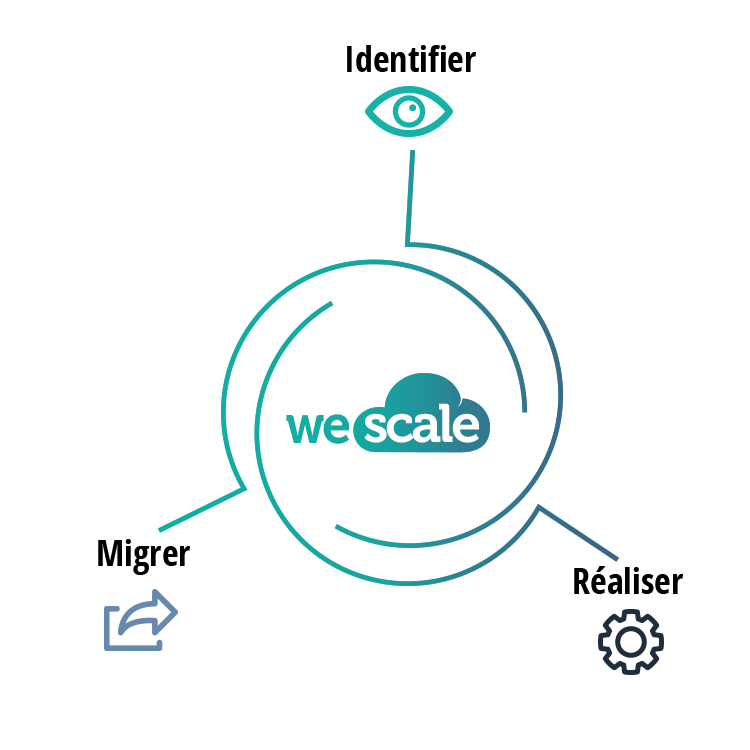

<div class="content">
    <section>
        <div class="container">
            <div class="row">
                <div class="col-md-12">
                    <h1 class="title">Le service Wescale</h1>
                </div>
            </div>
            <div class="row">
                <div class="col-md-6">
                    <h2>01_Identifier</h2>

                    <p>Nous proposons l’étude du SI de l'entreprise, pour définir les meilleurs axes d'améliorations.</p>
                    <ul>
                        <li>identification des services du SI dont la transformation apportera la plus grande valeur
                        </li>
                        <li>préconisations (quel type de Cloud, quels fournisseurs de services Cloud)</li>
                        <li>propositions de bonnes pratiques sur la base de retours d’expériences</li>
                    </ul>

                    <h2>02_Réaliser</h2>


                    <p>Nos consultants prennent part à la mise en place des services Cloud préconisés quelle que soit la
                        plate-forme de Cloud choisie :</p>
                    <ul>
                        <li>cloud public, privé ou hybride</li>
                    </ul>

                    <h2>03_Migrer</h2>

                    <p>Nous accompagnons nos clients afin d’opérer les changements techniques et humains induits par les
                        nouveaux services mis en place :</p>
                    <ul>
                        <li>formation des équipes (études et exploitation)</li>
                        <li>migration technique</li>
                        <li>mise en place de bonnes pratiques (DevOps, automatisation, …)</li>
                        <li>run des services dans le Cloud</li>
                        <li>évangélisation</li>
                    </ul>

                </div>
                <div class="col-md-6 schema-container">

                    

                </div>
            </div>
        </div>
    </section>
</div>